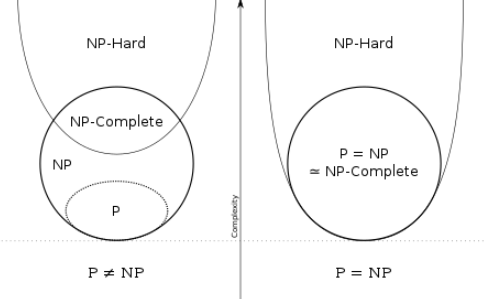

蔑视对方的人，眼睛的情态最为有趣。他们的眼神里，有着对反驳的胆怯与警戒，有时候，还藏着一种 “你敢反驳我便应战” 的好战光芒。当他们无意识地蔑视我时，混杂着优越感的迷醉快感会形成一种液体，浸润眼球，有时甚至形成一片水膜。
Ladner’s Theorem: Assume that P=NP, then there exists a language L∈/P and L is not NP-complete.
我们先考虑一下这个定理说明了什么。首先，P 和NP-complete 都是NP 问题的子集。首先考虑下面两幅图：

若P=NP，则如右图P=NP=NP-complete。但如果P=NP，那么 Ladner’s Theorem 就说明，P 和NP-complete 间是有” 空隙 “的。并不是所有NP 问题要么是P，要么是NP-complete 的。
下面我们证明一个较弱的定理形式，也就是引入了 Exponential Time Hypothesis (E.T.H) 后，去证明 Ladner’s Theorem。
Exponential Time Hypothesis(unproven): 3-SAT problem cannot be solved in subexponential time, i.e.
∃δ>0,3SAT∈/DTIME(2δn)
当然因为我们不知道P=?NP，也不知道 3SAT 问题是否可以多项式时间解决。所以这个 E.T.H 实际上也是一个假设。下面借助它我们来证明 Ladner’s Theorem。
我们构造如下一个 language：
L={⟨x,12∣x∣⟩∣x∈3SAT}
-
首先，L∈NP。证明如下：
我们构造一个用于验证的图灵机V(y,z)：
- 对于输入y，验证y 的形式是否为y=⟨x,12∣x∣⟩，如果不是，则拒绝。这一步需要时间为O(2c∣x∣)=O(∣y∣c)。
- 然后令z 是满足x 编码的 3SAT 问题的一个解，可以在多项式时间内验证z 是否使得x 可被满足。
故L∈NP。
-
其次，L∈/P。证明如下：
反设存在一个图灵机M 可以在O(Nc) 时间内判定L。注意，N=∣y∣=O(2∣x∣)。
那么我们可以构造一个时间复杂度低的图灵机M′ 去判定 3SAT，从而违反 E.T.H。
- 对于输入x，首先 pad 成形式⟨x,12∣x∣⟩。 这一步需要需要时间O(2∣x∣) 。
- 运行M, 即在O(2c∣x∣) 的时间内判定了 3SAT。
上述图灵机所需时间为2O(∣x∣)。此时违反了 E.T.H。很显然，2O(∣x∣)<<2δn，故：
∀δ>0,3SAT∈DTIME(2O(∣x∣))⊆DTIME(2δn)
矛盾。故L∈/P。
-
最后，L∈/NP-complete。实际上，它不够难以至于不是NP-hard 的。证明如下：
反设L∈NP-hard，因为3SAT∈NP-hard，故有3SAT≤mpL。
我们先构造一个图灵机M，它能够在时间O(log2N⋅NlogN) 的时间内判定L：
- 对于输入y，首先检查它的形式是否符合y=⟨x,12∣x∣⟩。这一步复杂度为O(2c∣x∣)=O(N)。
- 然后提取出x，它是一个 3SAT 问题，我们用枚举法去解决它。这一步复杂度为O(∣x∣⋅2∣x∣)=O(log2N⋅2log2N)=O(log2N⋅NlogN)。
此时，3SAT 问题也可以复杂度很低地解决了。
因为3SAT≤mpL，故对于一个输入x，我们首先执行多项式时间规约得到一个输出y，而且∣y∣=O(∣x∣c)。注意这一步需要考虑一下，我们其实认为：多项式规约出的y 长度一定是输入x 的长度的多项式级别。为什么？因为多项式规约也只能执行多项式步。当然这个看起来很奇怪，因为我们总想着y=⟨x,12∣x∣⟩，但实际上这样的规约并不存在，所以y 并不是那样的形式，只需要知道有这么个y 即可。
规约后，就可以用上述图灵机去判定 3SAT 了，复杂度为O(log2∣y∣⋅∣y∣log∣y∣)=O(log2∣x∣⋅∣x∣clog∣x∣)<<O(2δn)。故违反了 E.T.H。
故L∈NP,L∈/P,L∈/NP-complete。证毕。